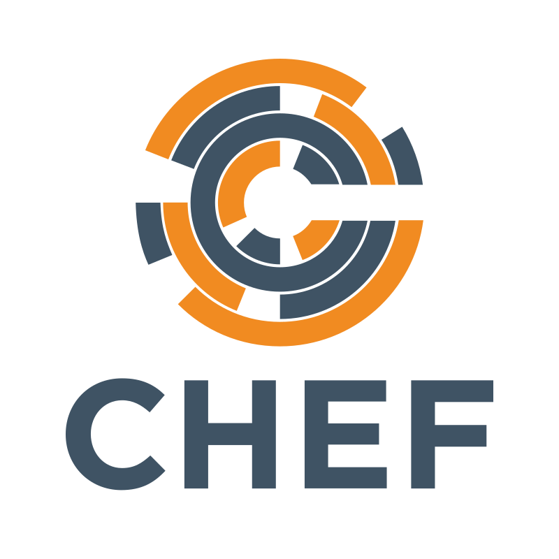

name: inverse layout: true class: center, middle, inverse --- # Chef for Beginners ## Introduction --- # Bill Meyer ## Sr. Solutions Architect ### bill@chef.io ??? This Chef Workshop provides a basic understanding of Chef's core components, basic architecture, commonly used tools, and basic troubleshooting methods. This should provide you with enough knowledge to start using Chef to automate common infrastructure tasks and express solutions to common infrastructure problems. Instructor Note: Be sure to read Appendix Z for training lab set up notes and additional instructor notes. Important: This workshop requires ChefDK version 0.8.1. If you use a later version such as 0.9.0, the exercises and labs won’t work properly. --- layout: false # Introduce Yourself * Name * Current job role * Experience with Chef and/or config management * Favorite Text Editor ??? Instructor Note: Be sure to read Appendix Z at the end of this instructor guide for training lab set up notes and additional instructor notes. Important: This workshop requires ChefDK version 0.8.1. If you use a later version such as 0.9.0, the exercises and labs won’t work properly. --- # Expectations -- .right-column[ * You will leave this workshop with a basic understanding of Chef's core components, architecture, commonly used tools, and basic troubleshooting methods. ] -- .right-column[ * You bring with you your own domain expertise and problems. Chef is a framework for solving those problems. Our job is to teach you how to express solutions to your problems with Chef. ] ??? Chef is not, in itself, a solution to your infrastructure problems. Chef is an automation framework. You bring the domain expertise about your own business and its problems. Chef provides a platform for modeling solutions to those problems. Our job in this class is to work together to teach you how to express solutions to your unique problems with Chef. Together we get unicorns and rainbows, but we can't have one without the other. --- # Workshop Objectives .right-column[ After completing this workshop, you should be able to: * Use Chef Resources to define the state of your system * Write and use Chef recipes and cookbooks * Automate testing of cookbooks ] --- # Agenda * Getting a Workstation * Using Resources * Building Cookbooks * Testing with Test Kitchen --- class: center, middle, inverse # What can Chef do? --- # Chef can... -- .right-column[ * ... automate how you build, deploy, and manage your infrastructure. ] -- .right-column[ * ... integrate with cloud-based platforms such as Azure and Amazon Elastic Compute Cloud to automatically provision and configure new machines. ] ??? Chef can automate how you build, deploy, and manage your infrastructure. Your infrastructure becomes as versionable, testable, and repeatable as application code enabling you to automate the process of configuring, deploying and scaling servers and applications --- class: center, middle, inverse # So what is Chef? --- # Chef is... -- .right-column[ * ... a large set of tools that are able to be used on multiple platforms and in numerous configurations. ] -- .right-column[ * ... like learning a language. You will reach fluency very fast but it will take practice until you become comfortable. ] -- .right-column[ **_A great way to learn Chef is to use Chef_** ] ??? Chef is a large set of tools that are able to be used on multiple platforms and in numerous configurations. We will have time to only explore some of its most fundamental pieces. Learning Chef is like learning a language. You will reach fluency very fast but it will take practice until you become comfortable. --- # Chef - Lab System Architecture .right-column[ * In this workshop you will use a pre-built virtual workstation with all the necessary tools already installed so you can start using Chef right away. ] --- # SSH Into the Remote Workstation ```bash $ ssh <ipaddress> -l chef ``` -- or ```bash $ ssh chef@<ipaddress> ``` ??? You should use an ssh client like PuTTY to connect to the remote workstation that we assign to you. You'll need to ssh into your assigned workstation in order to issue Chef commands. Instructor Note: You should assign the participants their Day 1 virtual workstations (AMIs) at this time. The login credentials and password for the virtual workstations is chef/chef. --- # Getting a Workstation The __chef__ user has been granted password-less sudoers access. The following software is installed on the remote workstation: * Chef DK * Docker * kitchen-docker gem --- # On to [Module 2](Chef for Beginners - Module 2.html) <center></center>